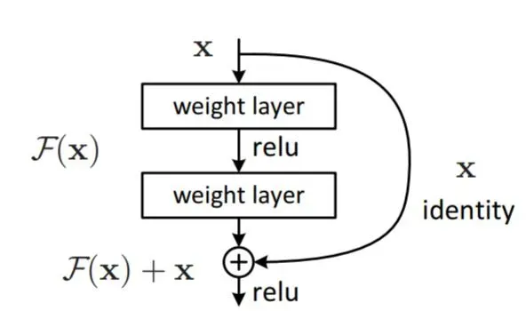
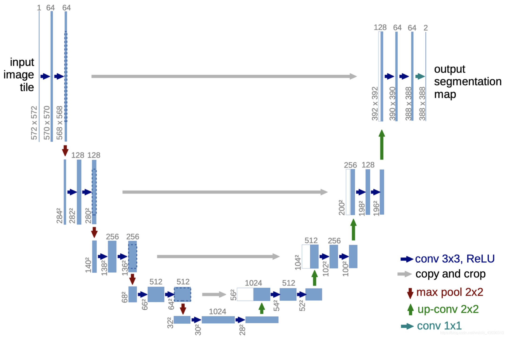

池化和卷积的异同
- 池化保留重要特征（聚合特征），降维，过滤噪声
- 卷积提取特征
AlexNet
- 使用ReLU激活函数：相比传统的 Sigmoid 或 Tanh 激活函数，ReLU 在训练深层网络时能更有效地防止梯度消失的问题。为了避免“死亡ReLU”问题（神经元的输入始终小于0，则该神经元的输出和梯度始终为0），可以使用Leaky ReLU或PReLU来代替ReLU。
- 使用Dropout技术：以一定的概率临时丢弃网络中的部分神经元，防止模型过拟合。
- 局部响应归一化 (LRN)：尽管后来的研究表明 LRN 并非必需，但在当时，这一技术被认为能提升模型的泛化能力。
- 重叠的池化层：AlexNet 使用的池化层步长小于池化核尺寸，增加了特征的重叠和覆盖范围，有助于提取更多的特征信息。
VGGNet
- 统一的卷积层设计：VGGNet 采用了多个相同尺寸的卷积核（主要是 3x3），层与层之间只通过增加卷积核的数量来扩展网络深度。
- 更深的网络结构：通过重复使用小卷积核和增加网络深度，VGGNet 能够在保持较小感受野的同时，捕捉更复杂的图像特征。
- 使用MaxPooling：在卷积层组之间使用最大池化层进行下采样，减少特征维度，减轻计算负担。
ResNet
网络结构上，ResNet是在普通网络层之间增加了短路连接。即在下图中，添加了x支路。

ResNet能够较好地解决层数增加时带来的梯度消失或梯度爆炸的问题，从而能构建有效的更多层数的网络。
DeconvNet
反卷积网络，用于可视化CNN内部特征。
UNet
适用于图像中的精确局部化任务，尤其是在数据量相对较少的情况下。

由于网络形状像‘U’，所以被称为U-Net
- conv 3x3,ReLu就是卷积层，其中卷积核大小是3x3，然后经过ReLu激活。
- copy and crop的意思是复制和裁剪。这块内容我觉得很多人最初和我一样，不明白是什么意思，这里的意思就是对于你输出的尺寸，你需要进行复制并进行中心剪裁。方便和后面上采样生成的尺寸进行拼接。
- max pool 2x2，就是最大池化层，卷积核为2x2。
- up-conv 2x2：反卷积层。
- conv 1x1：卷积层，卷积核大小是1x1。